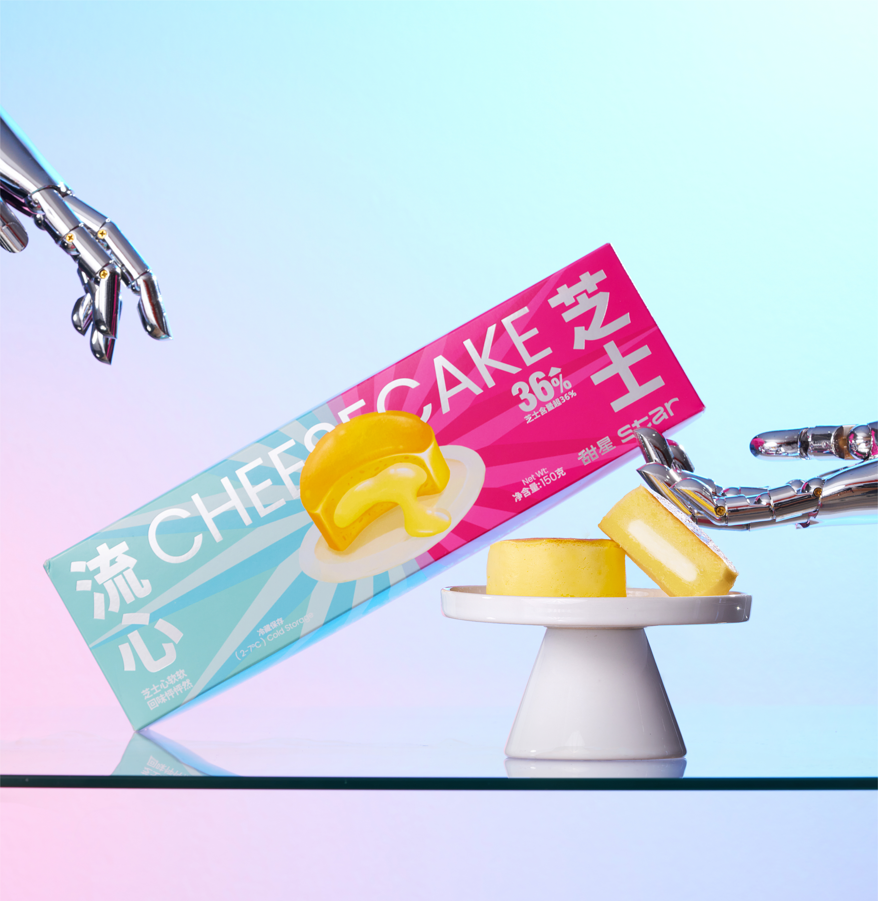
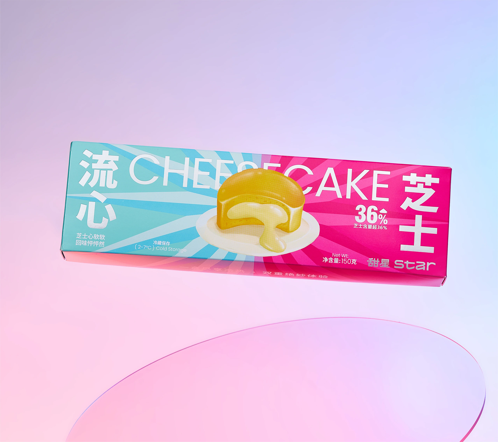
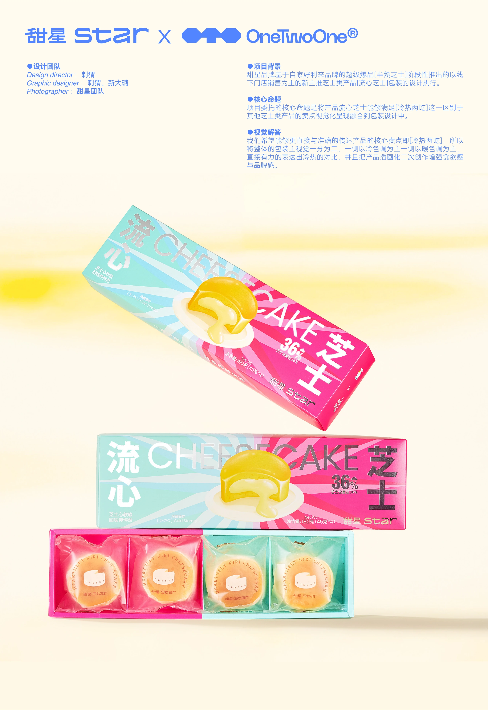
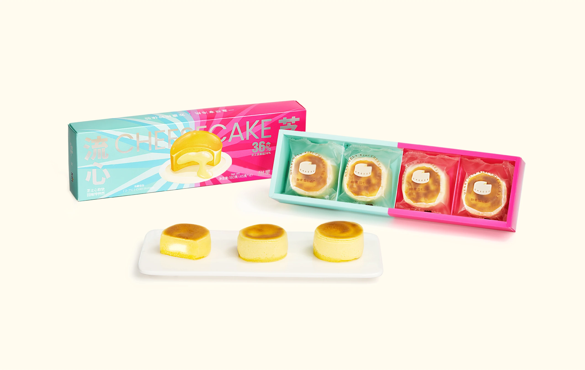
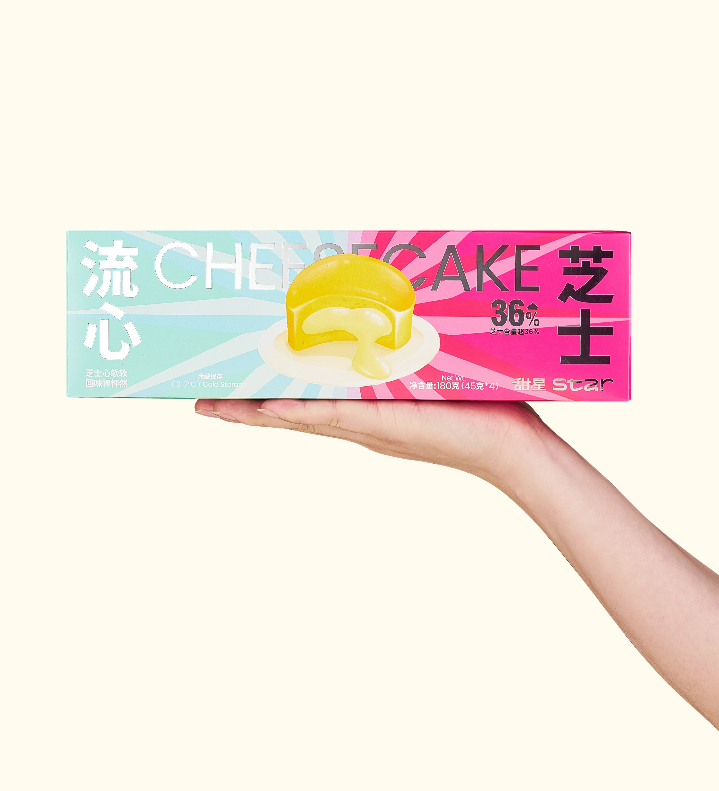
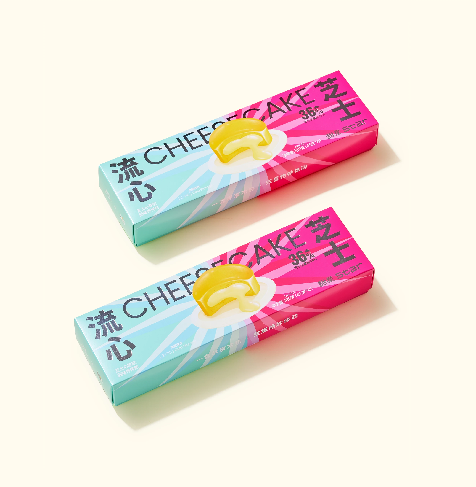
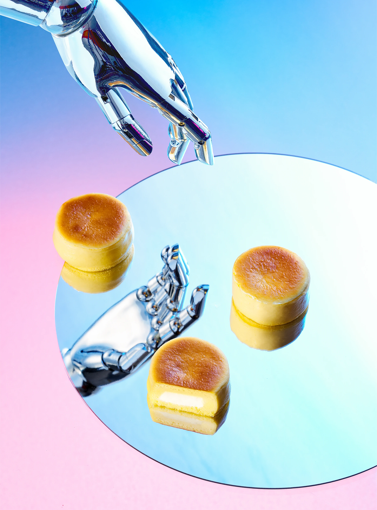
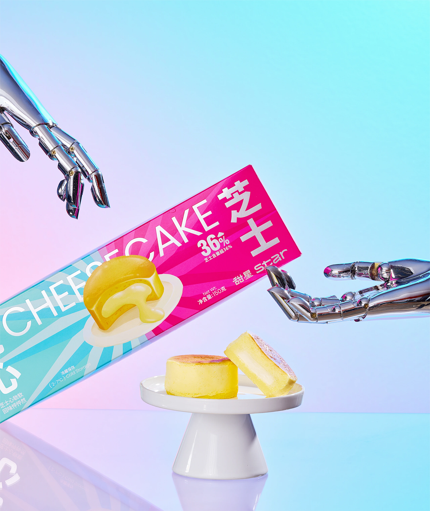

甜星流心芝士包装
Sweet Star Cheese Packaging


项目背景
甜星品牌基于自家好利来品牌的超级爆品[半熟芝士]阶段性推出的以线下门店销售为主的新主推芝士类产品[流心芝士]包装的设计执行
核心命题
项目委托的核心命题是将产品流心芝士能够满足[冷热两吃]这一区别于其他芝士类产品的卖点视觉化呈现融合到包装设计中
视觉解答
我们希望能够更直接与准确的传达产品的核心卖点即[冷热两吃]，所以将整体的包装主视觉一分为二，一侧以冷色调为主一侧以暖色调为主，直接有力的表达出冷热的对比，并且把产品插画化二次创作增强食欲感与品牌感




